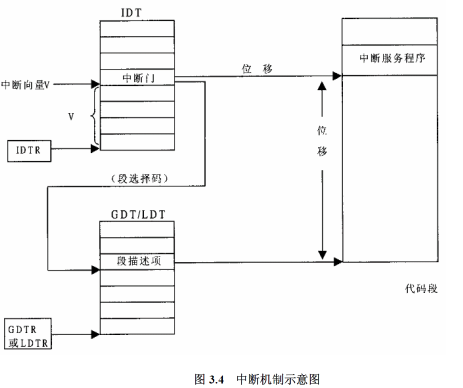
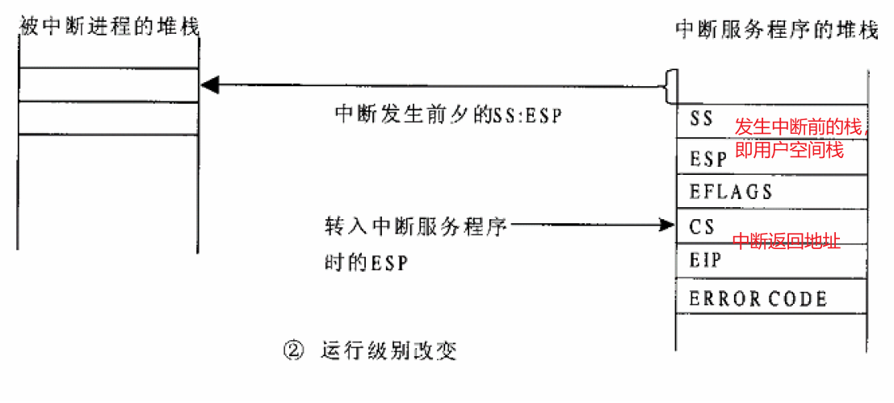
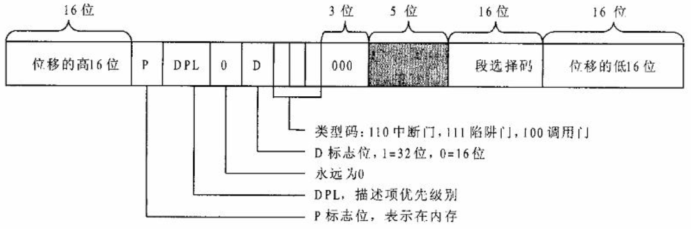
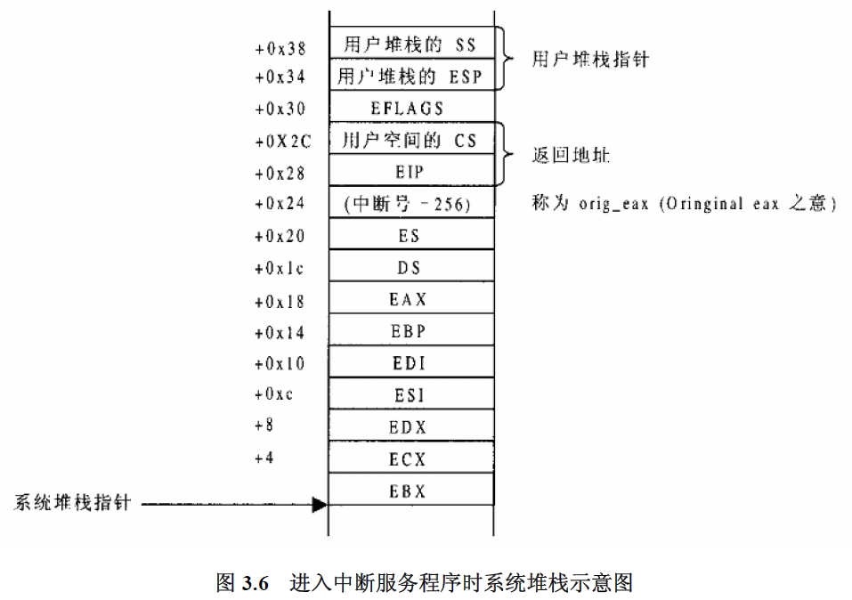

x86平台linux系统调用分析
[toc]
kernel version : linux 2.6.30.4
x86 系统调用整体流程

用户空间调用libc库的syscall函数，此函数内嵌汇编，汇编代码先将系统调用号写入eax寄存器，其他参数写入ebx ecx edx esi edi五个寄存器，若参数总个数超过五个，则应该用一个单独的寄存器存放指向所有这些参数在用户空间地址的指针。然后调用int 0x80指令陷入内核。

CPU从IDTR中得到IDT（中断向量表）地址，并根据中断号(0x80)找到IDT下标为0x80的元素，即门描述符，检查CPL=3, 门描述符DPL=0，不相符，发生栈切换。
CPU根据寄存器TR的内容找到当前TSS,并根据目标代码段的DPL，从TSS结构中取出新的堆栈指针（SS和ESP），并装入其堆栈段寄存器SS和堆栈指针ESP中，达到更换堆栈的目的。这种情况下CPU不但要将EFLAGS、返回地址以及出错代码压入堆栈，还要先将原来的堆栈指针也压入新堆栈中。

栈切换完成后，CPU从陷阱门描述符中找到中断服务程序所在内存段的段选择子和地址偏移，根据段选择子去GDT或者LDT中找到对应的段描述符，装入CS段选择寄存器，找到段基地址，并加上地址偏移后找到中断服务程序入口地址，跳转过去运行。
中断向量表IDT的初始化
基于linux 2.6.30.4
/* "arch/x86/kernel/traps.c" */
void __init trap_init(void)
{
set_intr_gate(0, ÷_error);
set_intr_gate_ist(1, &debug, DEBUG_STACK);
set_intr_gate_ist(2, &nmi, NMI_STACK);
/* int3 can be called from all */
set_system_intr_gate_ist(3, &int3, DEBUG_STACK);
/* int4 can be called from all */
set_system_intr_gate(4, &overflow);
set_intr_gate(5, &bounds);
set_intr_gate(6, &invalid_op);
set_intr_gate(7, &device_not_available);
set_task_gate(8, GDT_ENTRY_DOUBLEFAULT_TSS);
set_intr_gate(9, &coprocessor_segment_overrun);
set_intr_gate(10, &invalid_TSS);
set_intr_gate(11, &segment_not_present);
set_intr_gate_ist(12, &stack_segment, STACKFAULT_STACK);
set_intr_gate(13, &general_protection);
set_intr_gate(14, &page_fault);
set_intr_gate(15, &spurious_interrupt_bug);
set_intr_gate(16, &coprocessor_error);
set_intr_gate(17, &alignment_check);
set_system_trap_gate(SYSCALL_VECTOR, &system_call);
/*
SYSCALL_VECTOR
arch/x86/include/asm/irq_vectors.h:36:# define SYSCALL_VECTOR 0x80
asmlinkage int system_call(void);
*/
cpu_init();
}
程序中首先设置中断向量表的头19个陷阱门，这些中断向量表都是CPU保留用于异常处理的。
set_intr_gate() 等函数都调用了_set_gate()函数设置门描述符，本文重点分析系统调用相关的内容，即 set_system_trap_gate()函数。
/*"arch/x86/include/asm/desc.h" */
/*
set_system_trap_gate(SYSCALL_VECTOR, &system_call);
参数
n = SYSCALL_VECTOR = 0x80;
addr = &system_call
*/
static inline void set_system_trap_gate(unsigned int n, void *addr)
{
BUG_ON((unsigned)n > 0xFF);
_set_gate(n, GATE_TRAP, addr, 0x3, 0, __KERNEL_CS);
}
_set_gate()函数完成设置门描述符的工作。
/*
_set_gate(n, GATE_TRAP, addr, 0x3, 0, __KERNEL_CS);
"arch/x86/include/asm/desc_defs.h"
enum {
GATE_INTERRUPT = 0xE,
GATE_TRAP = 0xF,
GATE_CALL = 0xC,
GATE_TASK = 0x5,
};
arch/x86/include/asm/segment.h
#define __KERNEL_CS (GDT_ENTRY_KERNEL_CS * 8)
#define GDT_ENTRY_KERNEL_CS 2
*/
static inline void _set_gate(int gate, unsigned type, void *addr,
unsigned dpl, unsigned ist, unsigned seg)
{
/*
参数如下：
gate = n = SYSCALL_VECTOR = 0x80;
type = GATE_TRAP = 0xF;
addr = &system_call;
dpl = 0x3;
ist = 0;
seg = __KERNEL_CS = 2*8;
*/
gate_desc s;
pack_gate(&s, type, (unsigned long)addr, dpl, ist, seg);
/*
* does not need to be atomic because it is only done once at
* setup time
*/
write_idt_entry(idt_table, gate, &s);
}

先看看第一行gate_desc s;，主要分配了门描述符的结构。
/*gate_desc 结构 "arch/x86/include/asm/desc_defs.h" */
typedef struct desc_struct gate_desc;
struct desc_struct {
union {
struct {
unsigned int a; // 4字节
unsigned int b; // 4字节
};
struct {
u16 limit0; // 2字节 位移的低16位
u16 base0; // 2字节 段选择码
unsigned base1: 8, type: 4, s: 1, dpl: 2, p: 1; // 2字节
unsigned limit: 4, avl: 1, l: 1, d: 1, g: 1, base2: 8; //2字节
};
};
} __attribute__((packed));
attribute ((packed)) 的作用就是告诉编译器取消结构在编译过程中的优化对齐,按照实际占用字节数进行对齐，是GCC特有的语法。这个功能是跟操作系统没关系，跟编译器有关，gcc编译器不是紧凑模式的，在windows下，用vc的编译器也不是紧凑的，用tc的编译器就是紧凑的。
例如：
在TC下：struct my{ char ch; int a;} sizeof(int)=2;sizeof(my)=3;（紧凑模式）
在GCC下：struct my{ char ch; int a;} sizeof(int)=4;sizeof(my)=8;（非紧凑模式）
在GCC下：struct my{ char ch; int a;}attrubte ((packed)) sizeof(int)=4;sizeof(my)=5
struct desc_struct包含一个联合体，可以用其中任何一种类型，后边可以看到pack_gate()函数使用联合体中的第一种，即struct {unsigned int a; unsigned int b};。
/*
参数
gate = n = SYSCALL_VECTOR = 0x80;
type = GATE_TRAP = 0xF;
addr = &system_call;
dpl = 0x3;
ist = 0;
seg = __KERNEL_CS = 2*8;
*/
static inline void pack_gate(gate_desc *gate, unsigned char type,
unsigned long base, unsigned dpl, unsigned flags,
unsigned short seg)
{
gate->a = (seg << 16) | (base & 0xffff);
gate->b = (base & 0xffff0000) |
(((0x80 | type | (dpl << 5)) & 0xff) << 8);
}
pack_gate()此函数包装一个陷阱门描述符。gate->a在低地址。
/* gate->a = (seg << 16) | (base & 0xffff); gate->a = ((2*8)<<16 | (&system_call & 0xffff); (&system_call & 0xffff) : 中断服务函数地址段内偏移的低16位 ((2*8)<<16 : 段选择码，即中断服务函数所在代码段选择子在GTD或者LDT中的下标。 gate->b = (base & 0xffff0000) | (((0x80 | type | (dpl << 5)) & 0xff) << 8); gate->b = (&system_call & 0xffff0000) | (((0x80 | 0xF | (0x3 << 5)) & 0xff) << 8) 解析 0x80 : 1000 0000 0xf : 0000 1111 0x3 : 0000 0011 0xff : 1111 1111 0x80 | 0xF = 0x8f : 1000 1111 0x3 << 5 = 0110 0000 (0x80 | 0xF | (0x3 << 5)) = 1110 1111 ((0x80 | 0xF | (0x3 << 5)) & 0xff) = 1110 1111 (((0x80 | 0xF | (0x3 << 5)) & 0xff) << 8) = 1110 1111 0000 0000 对应到门描述符 (&system_call & 0xffff0000) : 中断服务函数地址段内偏移的高16位 P ： 1 ： 内存段在内存中 DPL ： 11 ：DPL = 3 0 ： 永远为0 D ： 1 表示32位 111 ： 类型码 ： 陷阱门 */
#define write_idt_entry(dt, entry, g) \
native_write_idt_entry(dt, entry, g)
/*
参数
idt = idt_table;
entry = gate = n = SYSCALL_VECTOR = 0x80;;
gate = &s；
其中
gate_desc idt_table[256]
__attribute__((__section__(".data.idt"))) = { { { { 0, 0 } } }, };
typedef struct desc_struct gate_desc;
*/
static inline void native_write_idt_entry(gate_desc *idt, int entry,
const gate_desc *gate)
{
memcpy(&idt[entry], gate, sizeof(*gate));
}
native_write_idt_entry()此函数将pack_gate()函数封装的陷阱门描述符拷贝进idt的0x80位置。
系统调用的中断服务程序分析
/*arch/x86/kernel/entry_32.S*/
# system call handler stub
ENTRY(system_call)
RING0_INT_FRAME # can't unwind into user space anyway
pushl %eax # save orig_eax
CFI_ADJUST_CFA_OFFSET 4
SAVE_ALL
GET_THREAD_INFO(%ebp) # system call tracing in operation / emulation
testl $_TIF_WORK_SYSCALL_ENTRY,TI_flags(%ebp)
jnz syscall_trace_entry
cmpl $(nr_syscalls), %eax
jae syscall_badsys
syscall_call:
call *sys_call_table(,%eax,4)
movl %eax,PT_EAX(%esp) # store the return value
syscall_exit:
LOCKDEP_SYS_EXIT
DISABLE_INTERRUPTS(CLBR_ANY) # make sure we don't miss an interrupt
# setting need_resched or sigpending
# between sampling and the iret
TRACE_IRQS_OFF
movl TI_flags(%ebp), %ecx
testl $_TIF_ALLWORK_MASK, %ecx # current->work
jne syscall_exit_work
先将%eax（系统调用号）压入栈，然后调用SAVE_ALL保存中断现场，检查系统调用号，跳转到相应的而系统调用函数去执行call *sys_call_table(,%eax,4)，sys_call_table定义如下，是一个函数指针列表。
/*arch/x86/kernel/syscall_table_32.S*/
ENTRY(sys_call_table)
.long sys_restart_syscall /* 0 - old "setup()" system call, used for restarting */
.long sys_exit
.long ptregs_fork
.long sys_read
.long sys_write
.long sys_open /* 5 */
.long sys_close
.long sys_waitpid
.long sys_creat
.long sys_link
.long sys_unlink /* 10 */
.long ptregs_execve
.long sys_chdir
.long sys_time
/* 略 */
关于SAVE_ALL
.macro SAVE_ALL
cld
PUSH_GS
pushl %fs
CFI_ADJUST_CFA_OFFSET 4 # 这些宏暂时不知道干啥的
/*CFI_REL_OFFSET fs, 0;*/
pushl %es
CFI_ADJUST_CFA_OFFSET 4
/*CFI_REL_OFFSET es, 0;*/
pushl %ds
CFI_ADJUST_CFA_OFFSET 4
/*CFI_REL_OFFSET ds, 0;*/
pushl %eax
CFI_ADJUST_CFA_OFFSET 4
CFI_REL_OFFSET eax, 0
pushl %ebp
CFI_ADJUST_CFA_OFFSET 4
CFI_REL_OFFSET ebp, 0
pushl %edi
CFI_ADJUST_CFA_OFFSET 4
CFI_REL_OFFSET edi, 0
pushl %esi
CFI_ADJUST_CFA_OFFSET 4
CFI_REL_OFFSET esi, 0
pushl %edx
CFI_ADJUST_CFA_OFFSET 4
CFI_REL_OFFSET edx, 0
pushl %ecx
CFI_ADJUST_CFA_OFFSET 4
CFI_REL_OFFSET ecx,
pushl %ebx
CFI_ADJUST_CFA_OFFSET 4
CFI_REL_OFFSET ebx, 0
movl $(__USER_DS), %edx
movl %edx, %ds
movl %edx, %es
movl $(__KERNEL_PERCPU), %edx
movl %edx, %fs
SET_KERNEL_GS %edx
.endm
穿插一些宏暂时不知道干什么的，先不管。主要看一下寄存器的压栈顺序：%es %ds %eax %ebp %edi %esi %edx %ecx %ebx

系统调用的定义
/* include/linux/syscalls.h */
#define SYSCALL_DEFINE0(sname) \
static const struct syscall_metadata __used \
__attribute__((__aligned__(4))) \
__attribute__((section("__syscalls_metadata"))) \
__syscall_meta_##sname = { \
.name = "sys_"#sname, \
.nb_args = 0, \
}; \
asmlinkage long sys_##sname(void)
#else
#define SYSCALL_DEFINE0(name) asmlinkage long sys_##name(void)
#endif
#define SYSCALL_DEFINE1(name, ...) SYSCALL_DEFINEx(1, _##name, __VA_ARGS__)
#define SYSCALL_DEFINE2(name, ...) SYSCALL_DEFINEx(2, _##name, __VA_ARGS__)
#define SYSCALL_DEFINE3(name, ...) SYSCALL_DEFINEx(3, _##name, __VA_ARGS__)
#define SYSCALL_DEFINE4(name, ...) SYSCALL_DEFINEx(4, _##name, __VA_ARGS__)
#define SYSCALL_DEFINE5(name, ...) SYSCALL_DEFINEx(5, _##name, __VA_ARGS__)
#define SYSCALL_DEFINE6(name, ...) SYSCALL_DEFINEx(6, _##name, __VA_ARGS__)
/* 其中 SYSCALL_DEFINEx*/
#ifdef CONFIG_FTRACE_SYSCALLS /*ftrace是内核提供的一种调试工具*/
#define SYSCALL_DEFINEx(x, sname, ...) \
static const char *types_##sname[] = { \
__SC_STR_TDECL##x(__VA_ARGS__) \
}; \
static const char *args_##sname[] = { \
__SC_STR_ADECL##x(__VA_ARGS__) \
}; \
SYSCALL_METADATA(sname, x); \
__SYSCALL_DEFINEx(x, sname, __VA_ARGS__)
#else
#define SYSCALL_DEFINEx(x, sname, ...) \
__SYSCALL_DEFINEx(x, sname, __VA_ARGS__)
#endif
#ifdef CONFIG_HAVE_SYSCALL_WRAPPERS
#define SYSCALL_DEFINE(name) static inline long SYSC_##name
#define __SYSCALL_DEFINEx(x, name, ...) \
asmlinkage long sys##name(__SC_DECL##x(__VA_ARGS__)); \
static inline long SYSC##name(__SC_DECL##x(__VA_ARGS__)); \
asmlinkage long SyS##name(__SC_LONG##x(__VA_ARGS__)) \
{ \
__SC_TEST##x(__VA_ARGS__); \
return (long) SYSC##name(__SC_CAST##x(__VA_ARGS__)); \
} \
SYSCALL_ALIAS(sys##name, SyS##name); \
static inline long SYSC##name(__SC_DECL##x(__VA_ARGS__))
#else /* CONFIG_HAVE_SYSCALL_WRAPPERS */
#define SYSCALL_DEFINE(name) asmlinkage long sys_##name
#define __SYSCALL_DEFINEx(x, name, ...) \
asmlinkage long sys##name(__SC_DECL##x(__VA_ARGS__))
#endif /* CONFIG_HAVE_SYSCALL_WRAPPERS */
/* 后边是所有系统调用的函数声明 */
asmlinkage long sys_time(time_t __user *tloc);
系统调用的定义分布在内核源代码多个源文件中find . -type f -name "*.c" | xargs grep SYSCALL_DEFINE | wc -l
系统调用号
每个系统调用xxx都对应着一个系统调用号__NR_xxx。当应用程序调用某系统调用时，寄存器eax中保存该系统调用对应的系统调用号。系统调用号定义于如下头文件中：
include/linux/unistd.h
+- arch/x86/include/asm/unistd.h
+- arch/x86/include/asm/unistd_32.h
| +- ...
| +- #define __NR_process_vm_writev 348
| +- #define NR_syscalls 349
+- arch/x86/include/asm/unistd_64.h
+- ...
+- #define __NR_process_vm_writev 311
+- __SYSCALL(__NR_process_vm_writev, sys_process_vm_writev)
在应用程序中仅需包含头文件#include <unistd.h>即可。
#ifndef _LINUX_UNISTD_H_
#define _LINUX_UNISTD_H_
/*
* Include machine specific syscall numbers
*/
#include <asm/unistd.h>
#endif /* _LINUX_UNISTD_H_ */
对于x86而言，asm/unistd.h即为arch/x86/include/asm/unistd.h:
#ifdef __KERNEL__
# ifdef CONFIG_X86_32
# include "unistd_32.h"
# else
# include "unistd_64.h"
# endif
#else
# ifdef __i386__
# include "unistd_32.h"
# else
# include "unistd_64.h"
# endif
#endif
对于x86 32-bit而言，unistd_32.h即为arch/x86/include/asm/unistd_32.h:
#define __NR_restart_syscall 0
#define __NR_exit 1
#define __NR_fork 2
#define __NR_read 3
#define __NR_write 4
#define __NR_open 5
#define __NR_close 6
...
#define __NR_process_vm_readv 347
#define __NR_process_vm_writev 348
#ifdef __KERNEL__
#define NR_syscalls 349
#endif
系统调用的返回值
如果系统调用执行失败，系统调用并不直接返回错误码，而是将错误码保存到全局变量errno中，因而可根据errno的值来确定错误类型。错误码定义于如下头文件中：
include/linux/errno.h // 错误码512-530
-> arch/x86/include/asm/errno.h // 仅包含asm-generic/errno.h，未新增错误码
-> include/asm-generic/errno.h // 错误码35-133
-> include/asm-generic/errno-base.h // 错误码1-34
也可以执行man errno查询到。
新增系统调用
通过修改内核代码
- 确定新增的系统调用号
- 修改arch/x86/include/asm/unistd_32.h，为新增的系统调用定义的系统调用号
#define _NR_testsyscall 350 - 修改arch/x86/kernel/syscall_table_32.S，将新增的系统调用加入到系统调用表，即数组sys_call_table中写入：
long sys_testsyscall /* 350 */
- 修改arch/x86/include/asm/unistd_32.h，为新增的系统调用定义的系统调用号
- 编写新增的系统调用
编写一个系统调用意味着要给内核增加一个函数，将该函数写入文件kernel/sys.c中，代码如下：
SYSCALL_DEFINE0(testsyscall) { console_print("hello world\n"); return 0; } - 使用新增的系统调用
因为C库中没有新增的系统调用的程序段，必须自己建立其代码，如下：
#inculde <syscalls.h> SYSCALL_DEFINE0(testsyscall) void main() { tsetsyscall(); }
通过编写插入内核模块
编写系统调用内核模块
#inculde <linux/kernel.h> #inculde <linux/module.h> #inculde <linux/modversions.h> #inculde <linux/sched.h> #inculde <asm/uaccess.h> #define _NR_testsyscall 350 extern void *sys_call_table[]; asmlinkage long testsyscall() { printf("hello world\n"); return 0; } int syscall_test_init() { sys_call_table[_NR_tsetsyscall] = testsyscall; printf("system call testsyscall() loaded success\n"); return 0; } module_init(syscall_test_init); void syscall_test_exit() { } module_exit(syscall_test_exit)- 编写使用新增的系统调用的代码
- 编译内核模块并插入内核模块
从用户空间直接访问系统调用
方式一：通过C库函数，C库函数封装了所有的系统调用。
方式二：2.6.18版本之前的内核可以使用_syscall宏。但是自2.6.19版本开始，_syscall宏被废除，我们需要使用syscall函数，通过指定系统调用号和一组参数来调用系统调用。
#include <unistd.h>
#include <sys/syscall.h>
#include <sys/types.h>
#define __NR_gettid 224
int main(int argc, char *argv[])
{
pid_t tid;
tid = syscall(__NR_gettid); //括号内参数直接写224也可以
/*也可以写成tid = syscall(SYS_gettid);*/
}
注： syscall()函数是glibc中的一个用户空间函数，可以通过
man syscall命令查看，函数声明在/usr/include/unistd.h中，对应系统调用号在/usr/include/asm-generic/unistd.h中声明。